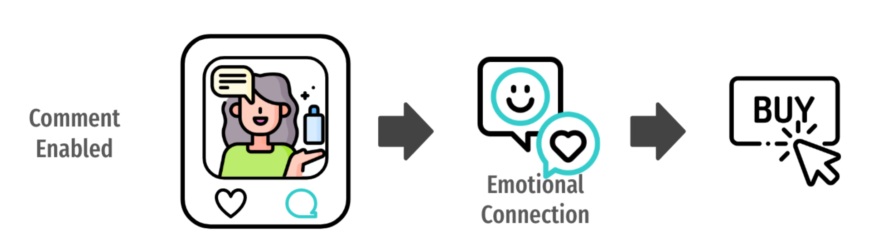
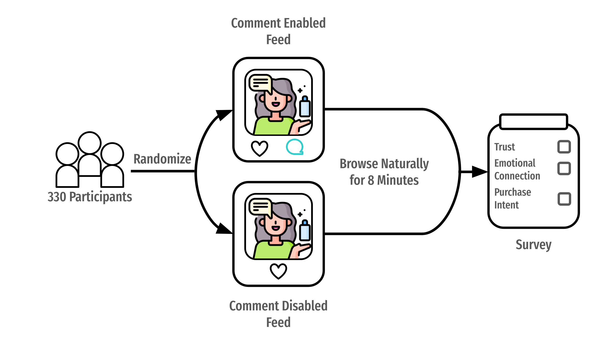
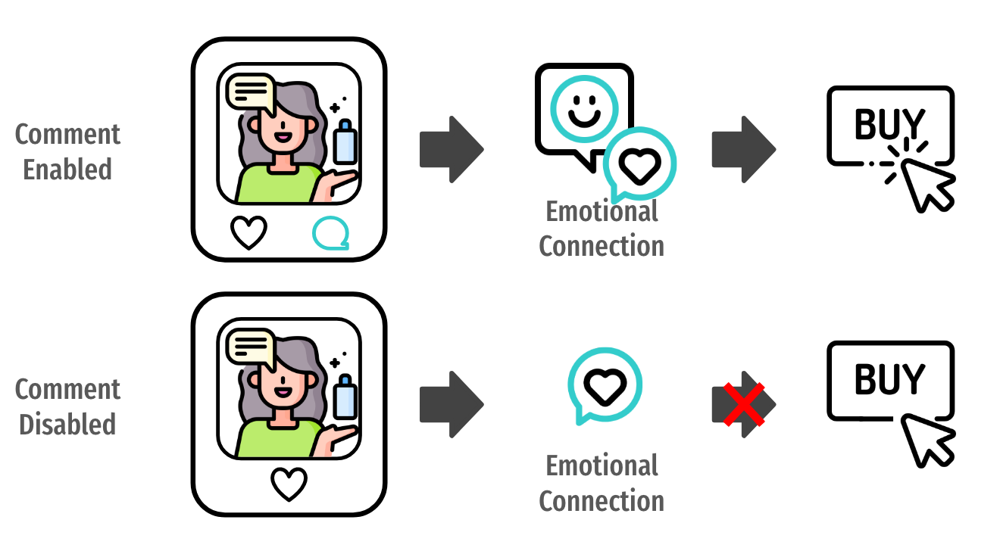

Case study
When Social Features Drive Influencer Conversions
A causal study testing how platform affordances strengthen-or break—the link between influencer relationships and purchase intent.

At a Glance
- Built a fully functional Instagram-like feed to test platform affordances
- Randomly removed the comment feature for half of participants
- Measured how emotional connection translated into purchase intent
- Used SEM to identify which psychological pathways broke when comments disappeared
Full Case Narrative
Social platforms routinely experiment with hiding or removing engagement features to simplify interfaces or reduce toxicity. But these features are more than surface-level UI elements, they may quietly structure how emotional connection turns into action.
This project asks a deceptively simple question: what happens to influencer persuasion when the comment button disappears? Not hypothetically, but in a controlled environment where everything else stays the same.
As part of my dissertation research, I built a realistic Instagram-like platform and ran a large-scale experiment to isolate the psychological role comments play in influencer advertising.
Research Question
How does removing the comment affordance alter the psychological pathway from influencer exposure to purchase intent?
- Do comments increase trust or emotional closeness?
- Do comments change whether those feelings translate into buying behavior?
- Which parts of the influence journey depend on social affordances?
Study Design

I designed a randomized controlled experiment using a high-fidelity social media prototype. Participants were randomly assigned to one of two platform conditions:
- Comments ON: Likes and comments enabled
- Comments OFF: Likes enabled, comments removed
All other elements (content, layout, influencers, and ads) were held constant. Participants browsed the feed naturally for eight minutes, followed by exposure to a sponsored influencer post.
Behind the scenes, the system logged scrolling behavior, clicks, dwell time, and interaction patterns.
Methods & Analysis
- Sample: 330 participants, randomized assignment
- Stimuli: Real posts from two virtual influencers (Rozy, Imma)
- Measures: Parasocial interaction, trust, authenticity, product interest, purchase intent
- Analysis: Structural Equation Modeling (SEM) in R (
lavaan)
SEM was used to model the full psychological pathway from platform affordance to emotional response to purchase intention, allowing direct comparison of which links were present or absent across conditions.
Key Findings

1. Removing comments did not reduce liking or trust
At a surface level, participants formed similar levels of trust and emotional connection with influencers whether comments were present or not.
If measured only through mean differences, comments appeared to “not matter.”
2. Comments determine whether emotional connection converts
Structural equation modeling revealed a critical difference in pathway structure.
- Comments ON: Emotional closeness and trust strongly predicted purchase intent
- Comments OFF: Those same feelings no longer translated into buying consideration
The emotional bond did not disappear. But it stopped functioning as a driver of action.
3. Comments act as a bridge, not an amplifier
Comments did not increase trust or closeness directly. Instead, they enabled those feelings to carry weight in decision-making.
4. Some breaks in the journey are structural, not visible
Traditional engagement metrics and surface-level journey maps suggested the experience was largely unchanged when comments were removed. However, modeling the full influence pathway revealed a hidden break: emotional connection no longer translated into purchase intent.
This highlights an important insight for product teams: some UX changes do not alter how users feel or behave moment-to-moment, but quietly rewire which emotions actually drive outcomes.
By modeling the full psychological pathway rather than isolated metrics, this analysis revealed a structural break in the user journey that traditional engagement measures would have missed.
Interpretation
Comment sections function as psychological infrastructure. They signal social presence, reciprocity, and legitimacy, and allows parasocial feelings to convert into behavioral intent.
When that signal is removed, influence becomes emotionally intact but behaviorally inert.
Design Implications for Social Platforms
- Engagement features shape emotional flow, not just interaction metrics
- Removing features can preserve UX simplicity while breaking conversion pathways
- Trust does not automatically translate into action without social affordances
- Platform toggles act as logic gates in the persuasion process
Why This Matters
This study shows how small interface changes can quietly rewire influence without changing what users consciously notice.
By combining journey thinking with causal pathway modeling, designers can identify both where experiences feel different — and where influence breaks structurally.
Sometimes, removing one button doesn’t damage the experience. It just disconnects emotion from action.